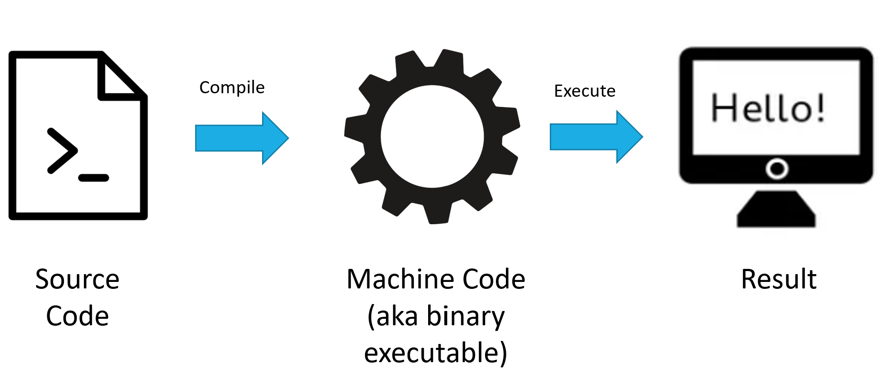
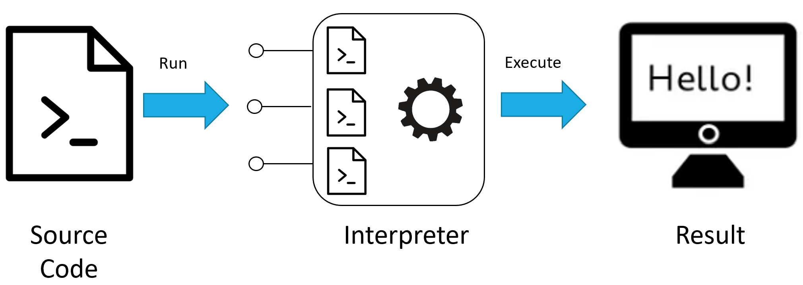
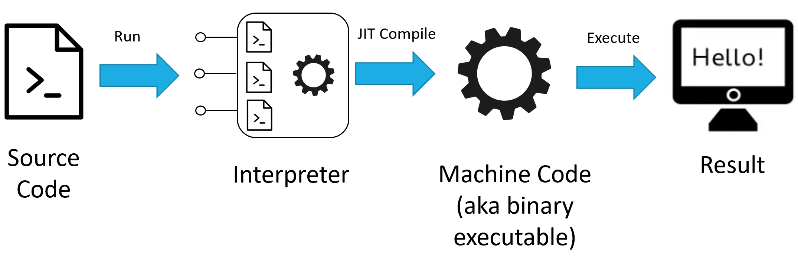

Compiled Languages, Interpreted Languages, and JIT#
To understand why execution speed is slower in Python than many other languages requires some background knowledge of compilers vs. interpreters, and compiled languages vs. interpreted languages. This section provides some background information.
Compiled Language#
A compiled language uses a compiler to translate the entire source code of a program into machine code, also known as a binary executable file, ahead of time before the program is run. This process creates an executable that is specific to a particular hardware architecture and operating system. Because the compilation happens in advance, the resulting executable can run with high efficiency directly by the CPU, without the need for real-time translation or interpretation. However, this also means that the executable is tailored to a specific platform, and running the program on a different platform would require recompilation from the source code for that new target. Examples of languages that are traditionally compiled include C, C++, and Fortran. Compiled languages are known for their performance efficiency, making them ideal for applications where execution speed is critical.
 Figure 1. Schematic of compiled language operations.
Interpreted Language#
An interpreted language uses an interpreter to execute source code directly, rather than translating it into machine code in advance. The interpreter reads the source code line by line or statement by statement at runtime, interpreting and executing the instructions directly without producing standalone machine code. This process happens on the fly, with the interpreter acting as a bridge between the high-level code and the machine’s execution environment. Examples of languages typically executed in an interpreted manner include Python, JavaScript, and Ruby.
 Figure 2. Schematic of interpreted language operations.
Hybrid using Just In Time Compilation#
Just-In-Time (JIT) compilation is a hybrid approach that combines aspects of both interpreted and compiled languages. At runtime, JIT compilation transforms bytecode (a form of pre-compiled code) directly into optimized machine code. While an initial part of the code execution may involve interpretation, the JIT compiler dynamically compiles frequently executed code segments into machine code, enhancing performance. The first execution of code might be slower due to this compilation step, but subsequent executions of the same code are faster as they utilize the already compiled machine code. This approach allows programs to benefit from both the flexibility of interpreted languages and the performance of compiled languages.
 Figure 3. Schematic of just-in-time (JIT) compilation.
Pros and Cons#
Compiled languages offer the advantage of faster execution speeds because the source code is translated into machine code by the compiler ahead of time, eliminating the need for runtime translation. This allows the program to run directly on the hardware without additional overhead. However, this efficiency comes at the cost of less flexibility in code development, as aspects like variable types need to be explicitly declared, and the compilation process adds steps to the development cycle. The ability to distribute executable files without the source code provides an additional layer of privacy for the code.
Interpreted languages facilitate rapid code development and iteration because the interpreter handles many operations dynamically, such as type inference, which allows developers to write code more quickly without worrying about low-level details. This agility, however, results in slower execution speeds due to the runtime operations required, including type checking and dynamic dispatch. While source code must be disclosed to run, enhancing transparency and modifiability, this characteristic also means interpreted code is inherently more portable, as it can be executed in any environment with a compatible interpreter.
JIT-compiled languages attempt to blend the best of both worlds, offering improved execution speeds close to compiled languages after the initial compilation step. While the first run of code involves compilation overhead, subsequent runs benefit from the optimized machine code. JIT environments often provide features that support rapid development, similar to interpreted languages, including dynamic type inference. However, the need to distribute source code or bytecode rather than purely binary executables means that JIT-compiled languages may not offer the same level of code privacy as traditional compiled languages. Their reliance on a JIT compiler for execution also introduces some limitations on portability, although less so than with fully compiled languages, as bytecode can run across different platforms with a compatible JIT compiler.
Table 1. Pros and cons of compiled, interpreted, and hybrid (JIT).
Compiled |
Interpreted |
JIT |
|
|---|---|---|---|
Execution Speed |
✔️ |
✖️ |
Partially✔️ |
Code Development |
✖️ |
✔️ |
✔️ |
Private Code |
✔️ |
✖️ |
Partially✖️ |
Portability |
✖️ |
✔️ |
Partially✔️ |
Note: For JIT, “Partially ✖️” under Private Code and “Partially ✔️” under Portability indicate that while JIT-compiled languages can offer some advantages over purely compiled languages in these aspects, they still face limitations not present in interpreted languages.